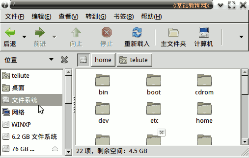

Ubuntu 命令行教程
作者：TeliuTe 来源：基础教程网
三、文件和路径 返回目录 下一课系统中的设备和数据，都是以文件的形式来访问的，找到一个文件的步骤称作路径；
1、设备文件
1）/ “根”是最高一级的，其他文件都在它之内，也称为文件系统；

2）硬盘用 hd0、hd1 或者 sda、sdb 来表示，硬盘上的分区用 sda1、sda5 等表示，
打开终端，输入 sudo fdisk -l 按回车，输入密码后可以查看硬盘分区情况；
3）文件存放在对应的文件夹中，系统固定的文件夹有 /home、/boot、/etc、/tmp 等；
4）用户文件存放在自己的主文件夹中，一般是自己的用户名的文件夹；
2、路径
1）每个文件或文件夹都是从根 / 开始，然后一级一级往下找，
打开文件浏览器，点菜单“转到－位置”，可以看到路径；
2）打开一个终端时，当前位置是自己的主文件夹，用 ~ 表示，输入 pwd 命令可以查看当前路径；
3）路径切换用 cd 命令，查看文件用 ls 命令；
本节学习了文件和路径的基础知识，如果你成功地完成了练习，请继续学习下一课内容；
本教程由86团学校TeliuTe制作|著作权所有
基础教程网：http://teliute.org/
美丽的校园……
转载和引用本站内容，请保留版权信息和本站链接。